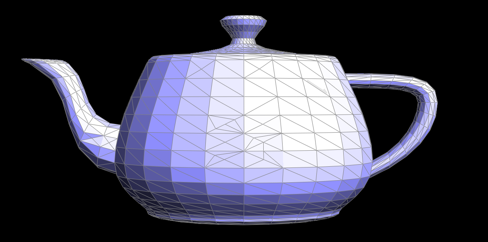

Overview
In this project, I implemented several core features of a mesh editor, including creating smooth lines and surfaces from points using de Casteljau's algorithm and Bezier curves, splitting and flipping edges in a triangle mesh using the Half Edge data structure, and creating smoother meshes by performing triangle subdivision to redraw the same mesh with a greater number of smaller traingles. These functions allow one to take something as simple as an arbitrary group of 3D points and obtain a complex and smoothly rendered 3D form from those points.
I learned that behind a mesh of triangles is a complicated data structure and a vast number of pointers, and that as a result even simple changes like deleting a vertex requires a lot of programming (and debugging)! I thought it was interesting to see how a relatively small number of points can define a ratehr complex and smooth surface with the help of triangle subdivision.
Section I: Bezier Curves and Surfaces
Part 1: Bezier curves with 1D de Casteljau subdivision
De Casteljau's algorithm takes a set of n points and performs linear interpolations between adjacent pairs of points to get a new set of n-1 points, and recursively repeats this on the interpolated set of points until there is only one point left. This point, along with the first and last points of the original n points define the Bezier curve, which is a cubic polynomial that runs through them.
Below is an example of de Casteljau's algorithm run over 6 points to define a Bezier curve (the green line). In each step j, there are 6-j new points drawn in blue that are interpolated from the points obtained in step j-1.
|
|

|
|
|
|
|
|
|

|
|
Part 2: Bezier surfaces with separable 1D de Casteljau subdivision
In this part, we are extending the de Casteljau algorithm from Part 1 to work with surfaces in 3D space. Surfaces are 2D shapes, so computing the points that define the Bezier surface involves running de Casteljau's over a 2D array of 3D points to obtain just a single 3D point. To do this, we need to run de Casteljau's algorithm first over each row in the 2D array of points to obtain a column of interpolated points, then once again on that column of points to obtain the final point on the Bezier curve.
I largely reused the implementation from Part 1, changing only a few things. First, I altered the linear interpolation function used in de Casteljau's to deal with 3D points (simply adding one more call to lerp() for the z-values of the input points). The recursive step in de Casteljau's is handled again by the evaluateStep() function, which is virtually the same as the one from Part 1. I implemented the evaluate1D() function which runs de Casteljau's by calling evaluateStep() over a 1D vector of 3D points. Finally, the evaluate() function calls evaluate1D() over every row in the input 2D vector to yield a column of intermediary points, and once more over that column to yield the final point on the Bezier curve.
Below is an example of a Bezier surface computed using the method described above:
|
|
Section II: Sampling
Part 3: Average normals for half-edge meshes
In this part, we compute the vertex normal at each vertex in the mesh to implement Phong shading, which allows the mesh to appear smoother than with flat shading. This requires the area-weighted normal vector to be computed at each vertex using the function Vertex::normal().
To do this for a vertex v, I iterated over all of the faces touching v (except those that were boundaries) starting with v->halfedge->face(). For each face, I computed the normal vector n to that face by taking 2 arbitrary vectors a, b defined by the 3 vertices of that face (a = v1-v0, b = v2-v0), and computing the cross product n = a x b. I added each vector n and its magnitude |n| to a running sum for each face. Lastly, I returned the sum(n_i)/sum(|n_i||) as the area-weighted normal vector for v.
Below is an example of the teapot mesh with flat shading and Phong shading which uses my Vertex::normal() implementation.
|
|
|
Part 4: Half-edge flip
Implementing the edge flip mainly involved storing many HalfEdgeElement variables and reallocating many pointers. In this particular operation, no elements are added or removed; however, all of the elements of the two triangles which border an edge have to be treated. Once I stored each halfedge, edge, vertex and face as variables, I reallocated every pointer for each variable according to how the two traingles involved should look after the flip.
Below is the teapot example, first with the original edge configuration, and then with several edges flipped:
|
|
|
I did not run into too many issues debugging, though setting and reallocating all of the pointers was quite tedious. What helped was being pedantic about setting every pointer and following these guidelines.
Part 5: Half-edge split
Splitting an edge entails creating a new vertex to lie on the midpoint of the old edge, such that the two triangles surrounding an edge become four. This in turn requires adding edges, halfedges and faces and reallocating all of the pointers as in Part 4.
To set the position of the new vertex, I simply used the lerp functions from the previous parts of this project to place the new point in the middle of the old edge. Then, I added two new faces and three new edges with new halfedges connected to the new point, and reallocated the pointers from the old halfedges to accomodate the new vertex in the middle.
Below is the teapot mesh example, first without any alterations to the mesh and then with some split edges and a combination of split and flipped edges.
|
|
|
|

|
As in the previous part, before setting about implementing all of the pointer reallocations, I drew a diagram of the elements surrounding the input edge both before and after the edge split. I worked from the diagram to make sure all of my new pointers pointed to the correct elements. It was a tedious process, but it minimized the amount of debugging I had to do for this part.
Part 6: Loop subdivision for mesh upsampling
Mesh upsampling is similar in essence to pixel supersampling--we want to obtain a "smoother" surface from our mesh by sampling more points. What's different is that we don't have a high-resolution shape from which to sample mesh vertices, so we need to perform subdivision on our mesh triangles to add the new vertices.
Doing so involves performing the edge splitting operation implemented in the previous part in order to add new vertices within existing triangles in the mesh.
|
|
|
Simply splitting every existing egde in the mesh is not enough, since this produces a triangle mesh whose triangles are not congruent to the original triangles. We want to split each triangle such that they are congruent in shape to the original (4-1 subdivision), so we flip any new edges that were connected to a new and an old vertex after splitting:
|
|
At this point, the mesh has the same geometry as before, but with a new subdivided topology (we still have a cube, only with more edges and vertices). We want to update the positions of each vertex using a weighted average of the neighboring vertex positions, so that our mesh geometry changes and slowly becomes "smoothed-out":
|
|
To implement upsampling, I first computed the new vertex positions for the existing vertices and new ones added by edge splitting, to be stored temporarily and only used to relocate the vertices at the very end. This is because we want to keep track of which vertices are in the original mesh and which ones are added later; and if we split and flip vertices before doing so, we would lose track of which ones were new and which were old before performing the new position calculations.
I then split every edge in an arbitrary order, and flipped any new edges that connected an old and a new vertex, as described above. To do so, I just reused the split and flip functions I implemented in parts 4 and 5.
Lastly, updated all of the vertices with their new position by iterating over each one and accessing the temporarily stored new position to update the permanent vertex position.
We can perform this upsampling on simple meshes to obtain very smooth surfaces:
The behavior of the upsampling can be altered by preprocessing the edges--that is, performing topical edge splits and edge flips before running the upsampling algorithm. Below is an example of how splitting every edge first prevents the cube mesh from becoming asymmetric after upsampling:
Cube mesh upsampled without preprocessing (becomes asymmetric)
Cube mesh upsampled after splitting all edges first (stays relatively symmetric)
The above difference occurs because upsampling assigns each vertex to a new position based on the weighted average of surrounding vertices. This displacement is drastic when the mesh has relatively few vertices. However, when we split all of the edges before upsampling, we are adding new vertices to the same cube geometry; and when we then upsample, the new vertex positions will not differ as much from their original ones since we have more weight placed on the original cube geometry.